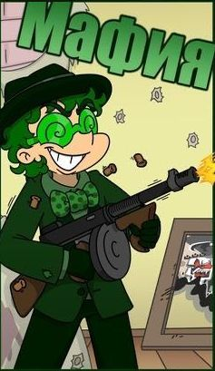
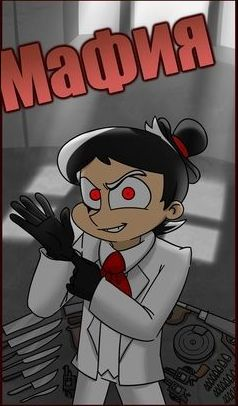
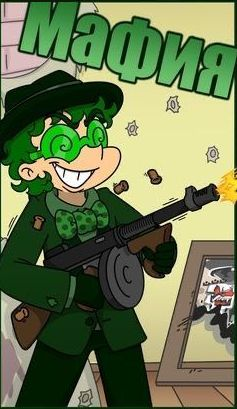
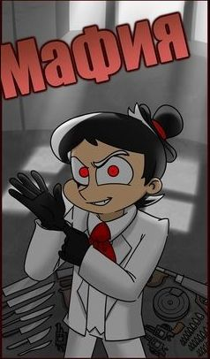

Основная колода
 



Черный лагерь(мафия)
Цель мафии — истребить всех мирных жителей или, по крайней мере, остаться с ними в равном количестве. Днем мафия выдает себя за честных горожан, а ночью мафиози осторожно просыпаются и вместе выбирают жертву, в которую «стреляют». Общаться представители мафии могут только жестами, чтобы их не услышали другие игроки. Номер выбранной жертвы представители мафии показывают ведущему и снова засыпают.
Глава мафии, он же дон
Выполняет два предназначения: во-первых, принимает окончательное решение, если мафия не может прийти к согласию в процессе выбора жертвы, а, во-вторых, просыпается отдельно от своих подопечных и пытается вычислить комиссара — предводителя мирных жителей. Каждую ночь дон указывает ведущему на того игрока, которого считает комиссаром, и получает либо отрицательный, либо положительный ответ. Если дон вычисляет комиссара, то старается убедить город выгнать этого игрока днем, либо стреляет в него следующей ночью вместе с мафией.